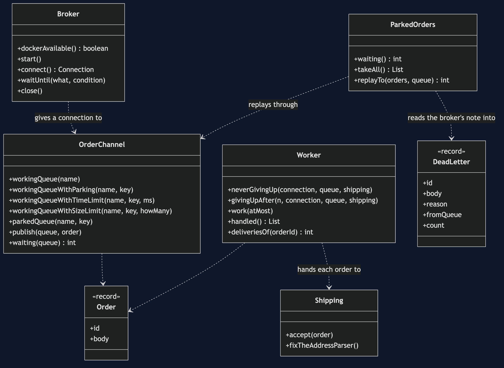
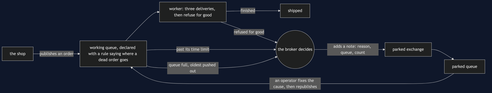
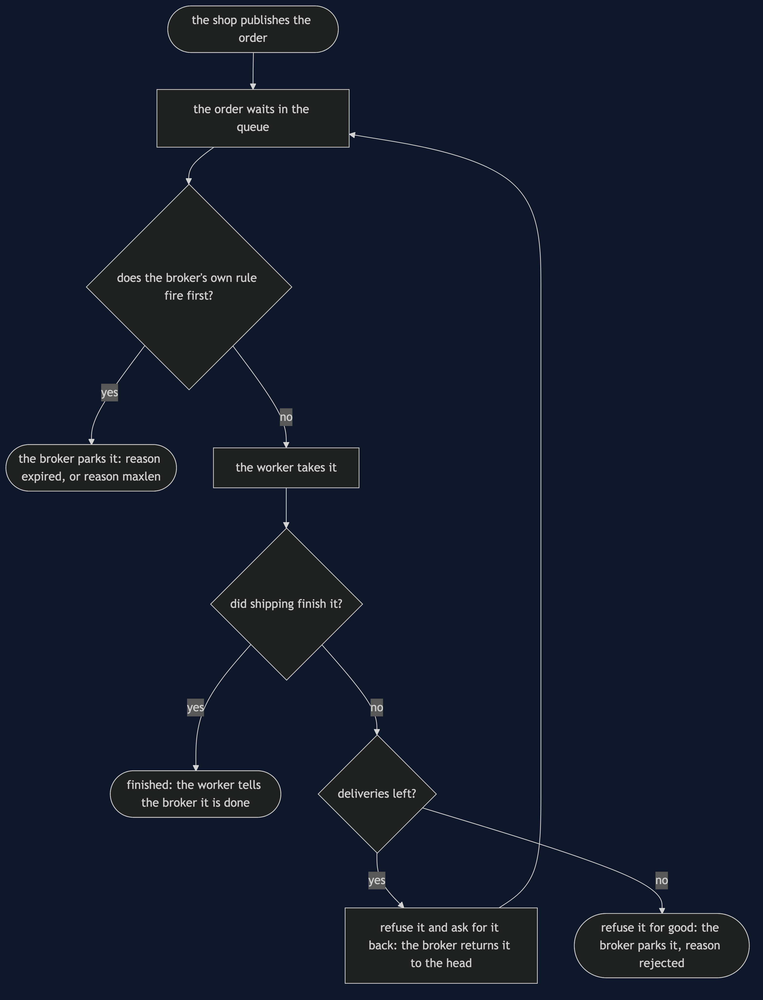
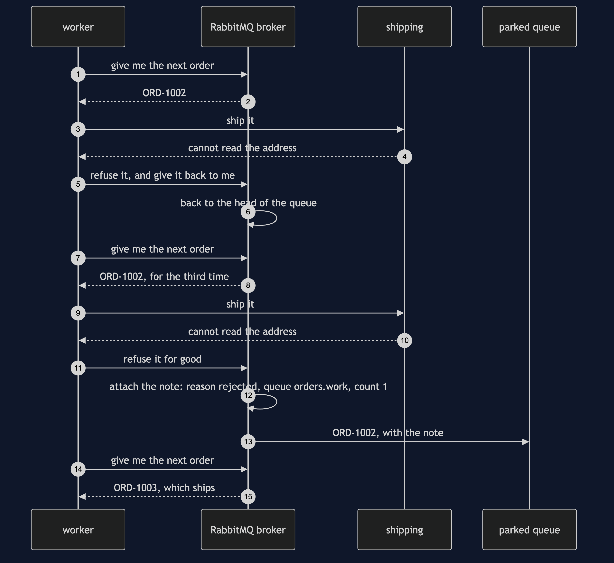
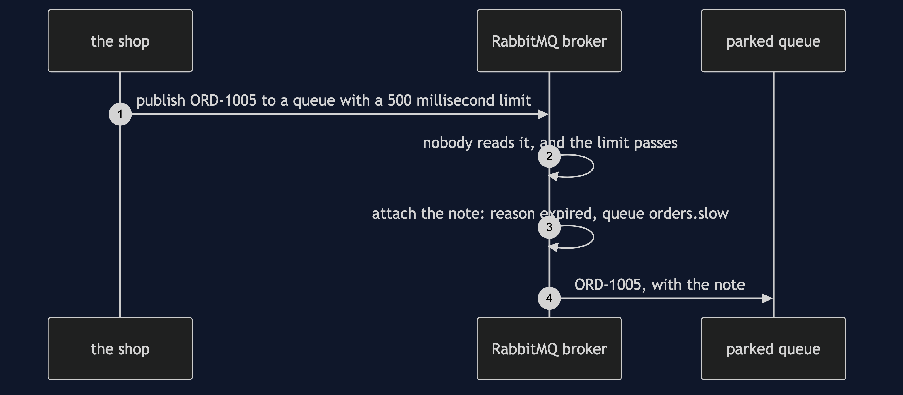
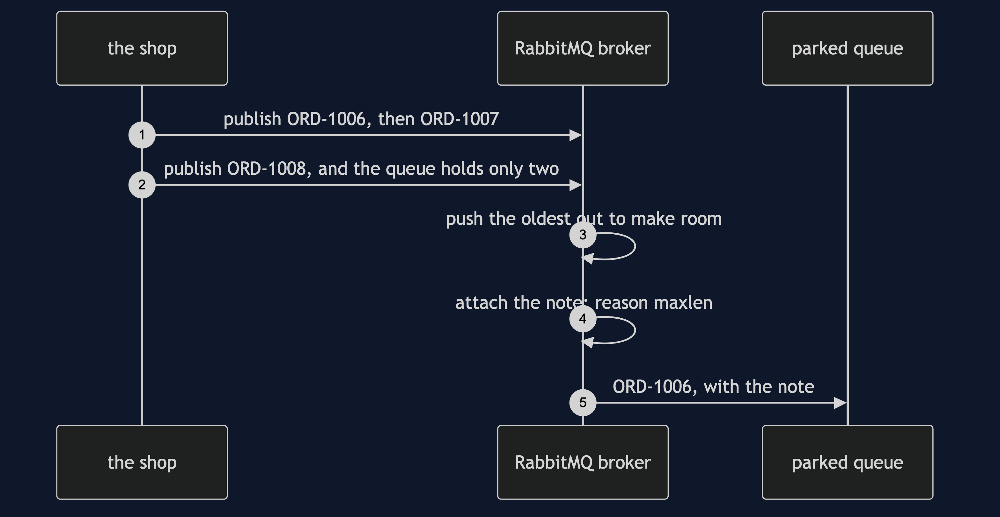
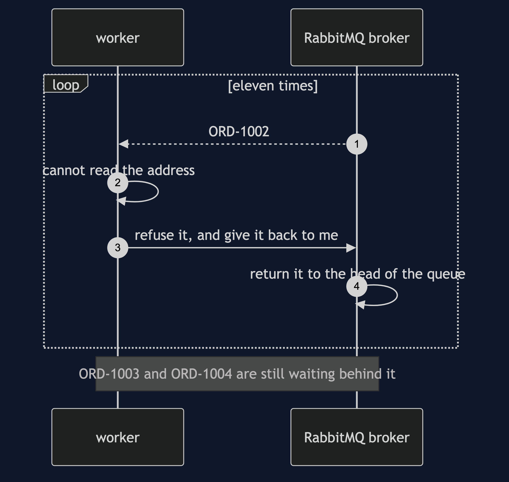
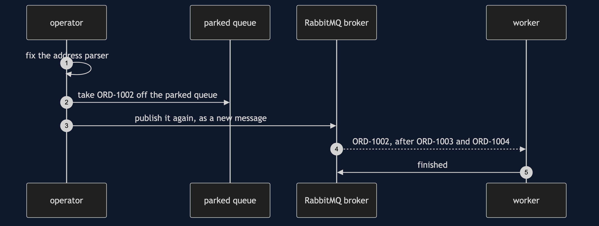

Dead Letter Channel with RabbitMQ Pattern
src/main/java/com/jk/explore/deadletterrabbit/
├── RabbitDeadLetterDemo.java the six acts
├── Broker.java starts and stops the RabbitMQ container
├── OrderChannel.java declares the queues, the rules on them, and the parked exchange
├── Worker.java takes one order at a time; finishes it or refuses it
├── ParkedOrders.java reads the parked queue, and puts orders back
├── Shipping.java the work itself: one failure that lasts, one that does not
└── Order.java DeadLetter.javaWith RabbitMQ, the application never moves a dead order anywhere. It writes a rule on the queue, and the broker does the moving and writes down why.
This project is the real-broker version of Dead Letter Channel. That project built the mechanism by hand, in plain Java, with nothing installed. This one runs a real RabbitMQ broker in a container that the demo starts and stops itself. It does not re-teach the pattern. It shows what a real broker adds, the failures that are the broker's own, and what it costs.
What you need
A container runtime — Docker Desktop, or anything Docker-compatible — running before you start. The demo brings the broker up and takes it down again; nothing is installed and nothing is left behind. With no runtime, the demo prints two sentences telling you what to do and stops, rather than a stack trace.
Run
./gradlew runSix acts. Every number below is the actual output of this program.
ONE. An order that can never succeed.
four orders, one with an address nothing can read. handled: [ORD-1001]. still waiting: 3. deliveries of ORD-1002: 11.
the worker refuses it and asks for it back, so the broker returns it to the head of the queue. ORD-1003 and ORD-1004 never get their turn.
TWO. A dead letter channel, made of a real exchange and a real queue.
the worker gives each order three deliveries. after the third it refuses ORD-1002 for good, and the broker takes it out of the queue.
handled: [ORD-1001, ORD-1003, ORD-1004]. still waiting: 0. parked: 1. deliveries in all: 7.
ORD-1003 failed once on a payment gateway timeout and went through on its second delivery. a slow day is not a dead order.
THREE. The broker writes down why.
ORD-1002: reason rejected, from queue orders.work, died 1 time.
the order itself is exactly as the shop sent it: ORD-1002 ship to ??? ?? ?????, card ending 9930
the application wrote none of that. the broker did, and it will be there tomorrow morning.
FOUR. Not every death is a refusal.
ORD-1005 sat in a queue with a time limit of 500 milliseconds and nobody read it: reason expired, from queue orders.slow.
a queue that holds two orders was sent three. the broker pushed the oldest out: ORD-1006, reason maxlen. still waiting there: 2.
no worker refused either order. the broker decided both times, and named the rule it applied.
FIVE. Fix it, and put it back.
before the fix: handled [ORD-1001, ORD-1003, ORD-1004], parked 1.
the address parser is fixed and 1 parked order is published back onto the working queue. handled: [ORD-1001, ORD-1003, ORD-1004, ORD-1002]. parked: 0.
note the order: ORD-1002 was handled after ORD-1003 and ORD-1004. a replay does not restore the order things were sent in.
and it goes back as a new message, so the broker's note is gone unless the operator copies it across first.
SIX. The bill: nobody is looking.
40 orders, half of them unreadable: 20 parked, 20 shipped, and every one of those 40 was paid for by a customer.
the working queue reports 0 waiting, so every dashboard shows the shop healthy. the loss is in the parked queue, and nothing tells anyone to look at it.
a parked queue needs an owner, an alert on its depth, and a limit on how long an order may stay, because each parked order is a copy of a customer's address.
and a broker is another thing to run: this demo declared 11 queues and 1 exchange in 1 RabbitMQ container, and took the container away at the end.What the simulation got right, and what it left out
This is the teaching payload of the project, so it is written out rather than implied.
What the simulation got right
- The shape. A message that fails for ever is taken out of the way so the messages behind it can move. That is the pattern, and the simulation has all of it.
- The limit. Trying a fixed number of times and then giving up is exactly what a real worker does against RabbitMQ, because RabbitMQ's classic queues do not count redeliveries for you either.
- Two kinds of failure. A payment gateway that times out once is not the same as an address nothing can read. The simulation makes that distinction and it survives contact with the real broker unchanged.
- The bill. Twenty orders quietly parked while the main queue reports zero waiting is true of a real broker too, and it is the most important thing in either project.
What the simulation left out
- Who does the moving. In the simulation the worker itself puts the message in a list. With RabbitMQ the worker only refuses the order; the broker moves it, because a rule written on the queue told it where to send a dead order. The application has no code that writes to the parked queue at all.
- The broker's own note. RabbitMQ attaches a record to the order saying which queue it died in, how many times it has died, and a one-word reason. The demo shows the reason
rejected. - Deaths that nobody chose. An order can die because it sat in the queue past a time limit — reason
expired— or because the queue was full and the oldest order was pushed out to make room — reasonmaxlen. No worker refused either one. The simulation has no way to produce either, because in the simulation nothing but the worker can act. - Asking for it back is a real thing you can do wrong. The simulation just keeps a message in a list. RabbitMQ lets the worker refuse an order and ask for it back, which returns it to the head of the queue; do that for ever and the order behind it never moves. Act one is that mistake, running against a real broker.
- What replay costs. Publishing a parked order back onto the working queue makes a new message. The broker's note does not travel with it unless the operator copies it across.
- A broker to run. Eleven queues, an exchange, a container, and a thing that has to be up before the shop can take an order.
Test
./gradlew test2 test classes, 9 test methods. There is no Thread.sleep anywhere in the tests: every wait is a poll on a real condition with a time limit that fails the test rather than hanging it. The tests that need the broker are skipped when no container runtime is there; the rest still run.
Technologies and versions
| What | Version | Why it is here |
|---|---|---|
| Java | 21 | The repository standard, via the Gradle toolchain block |
| Gradle | 9.2.1 | The wrapper in this directory; no separate install needed |
| Docker | 24 or later, running | Runs the broker |
| RabbitMQ | rabbitmq:4.3.6-alpine | The broker itself, in a container |
| RabbitMQ Java client | 5.36.0 | Speaks AMQP 0-9-1 to the broker |
| Testcontainers | 2.0.5 | Starts and stops the container from inside the demo |
| slf4j-simple | 2.0.17 | The logging both libraries expect |
| JUnit 5 | 5.10.2 | Test runner |
See docs/dependencies.md.
Learning Material
| Document | What it covers |
|---|---|
docs/problem-statement.md | The scenario, and what is new here |
docs/dead-letter-channel-with-rabbitmq-pattern-explained.md | The six acts, and the three reasons |
docs/class-diagram.md | The types |
docs/architecture-diagram.md | The shop, the queues, the broker |
docs/data-flow-diagram.md | What happens to one order |
docs/sequence-diagram.md | Written for a listener with the screen off |
docs/uml-diagram.md | Four sequences |
docs/animation.html | The six acts in a browser |
docs/prerequisites.md | What you need installed, and what you need to know |
docs/dependencies.md | What RabbitMQ is, what it costs, and that skipping this project loses none of the pattern |
docs/session.md | A one-hour taught session |
docs/spec.md | The generated specification |
docs/youtube.md | Title, description and chapters |
The pattern in one picture

Where each piece sits

How one order moves

Who calls whom, in order

All four sequences




Video
Built from video/scenes.py by video/build_video.sh. The rendered file is not committed; see the repository README for why.
Where you have already met this
Every managed queue service has this, and it is always the same three parts: a rule on the queue, somewhere for the dead message to go, and a note saying why. RabbitMQ calls the rule a dead letter exchange. Amazon SQS calls it a redrive policy. Every operations team has a story about one that filled up and nobody noticed.
When this is too much
For a queue where a message can never be permanently bad, or where losing one is fine, a dead letter channel is more to run than it is worth. Where a message can be poison, its absence is the outage.
Where this sits
This project pairs with Dead Letter Channel, and is in messaging-integration-patterns.